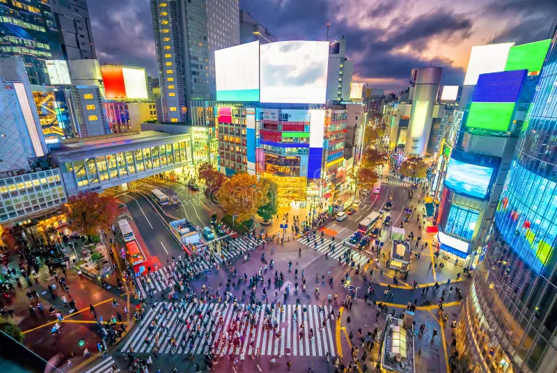
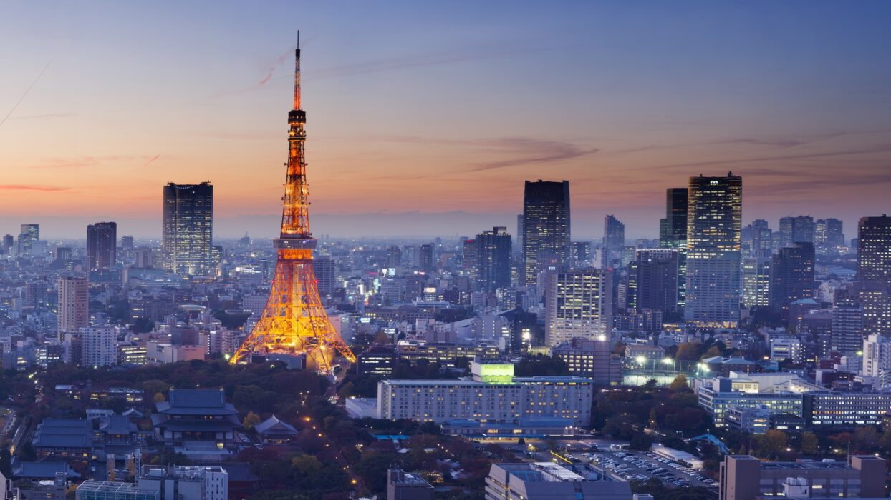
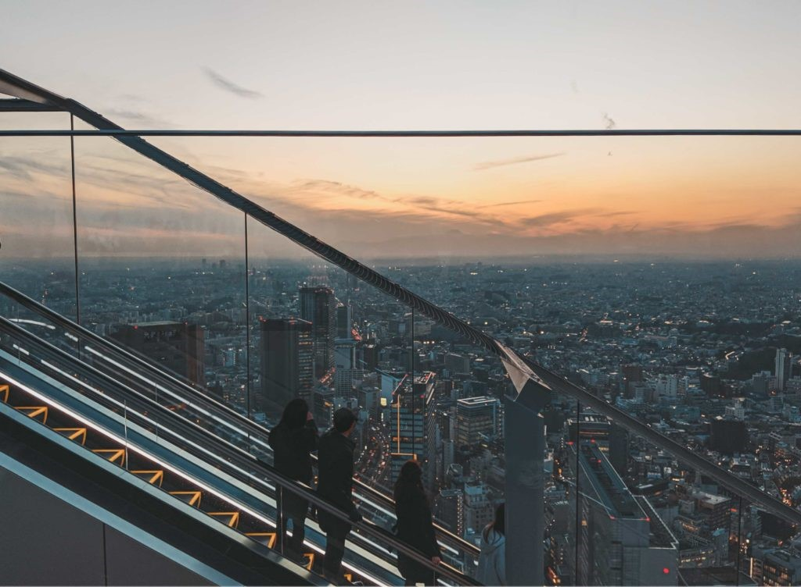

Shibuya Scramble Crossing
ONE THE MOST OVERCROWDED CROSSINGS IN THE WORLD!
The only place where 7 cross roads come together and the lights all turn red at the same time. Thousands of pedestrians then all cross at the same time. Amazing!
Tokyo Tower
Tokyo Tower is standing 333 meteres high. Beautiful tower, isn't it? The view is very cool, doesn't matter if you look on it or from it.
It is also known as the Japan Radio Tower.
Under the Tokyo Tower you can find the Foot Town. It's a five floor facility which has cafes, shops, and many other different things for tourists!
Shibuya Sky Escalator
This is where the time freezes. You can see any part of the Tokyo there, but you are still a passenger of an escalator! It's like it doesn't matter where you go (to the observing platform).
